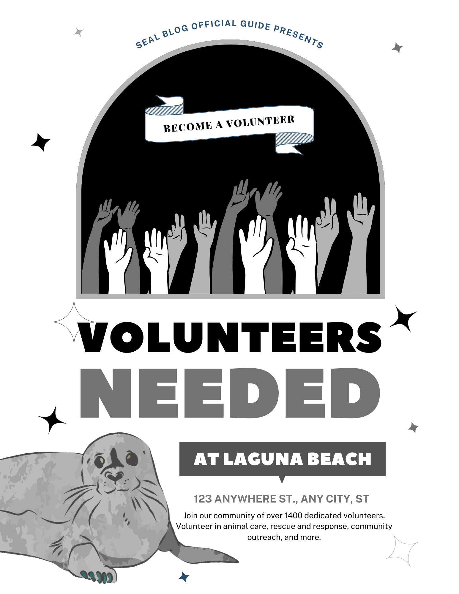

Volunteer for Seal Husbandry |
|---|
Seal Husbandryinvolves the comprehensive care, feeding, enrichment, habitat management, veterinary support, and training of seals in captivity (zoos, aquariums, rehab centers), focusing on their physical and behavioral well-being, often preparing them for release or ensuring long-term health. Key aspects include diet (fish, squid), enrichment (fake kelp, feeding boxes), regular health checks, clean water/environments, and specialized training for medical cooperation. |
| Fill out and submit a volunteer application through our contact before December 12, 2025, to be considered for our next New Volunteer Training. (Please note only adults 18+ who are no longer in high school are eligible to apply.) When contacted, complete a phone interview and pass a background check. |
